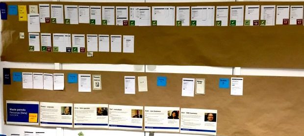

‘Apply for a standard rules waste permit’ was an Environment Agency project, being delivered by DEFRA. It was a private Beta service that enabled users to follow a template of ‘standard rules’ of permitting for set activities, to create a simple to follow and quick to apply for ‘standard rules’ permit. This was initially a paper based journey that was now available online and through assisted digital.
As the Senior Interaction Designer in the team, I was responsible for creating and overseeing the interaction and service design for the service. I worked closely with the designers of connecting services and programmes to coordinate a strategic cross-services design.
I joined the team part way into Private Beta, when the organisation was looking to build on the ‘standard rules’ journey, to allow for more complex operations to be permitted through the online application system, through a ‘bespoke’ permit application journey.
A clear framework had been set out in creating an online service from the paper based ‘standard rules’ form, in breaking up the form questions, and turning them into pages in the online service.
Reframing the task
I was keen to resist the ‘digitising paper forms’ approach, and reframed the context so that the paper forms were simply acting as a guide for research in challenging, and validating organizational requirements that needed to be captured into user stories, and fed into a user-centred design process.
The problem
Entering and processing the paper applications cost a huge amount of time and money to the Environment Agency. Call handlers would also get high volumes of calls with questions about the unclear application process or chasing application responses due to slow response application times.
I had to balance the need for detail to protect the environment, with a simple journey for users. Bespoke permits could be anything from a slight variation on a standard rules permit, to a complex waste operation with multiple additional sections. To make sure we captured everything for the most complex instances we used the existing paper based form to guide us in forming the business requirements.
I worked with a business analyst and went through each of the form questions in detail with various stakeholders and operational teams, to remove as many requirements as I could to simplify the journey for the user. I grouped the existing application requirements into themes and wrote them into user stories. As a team we looked at existing service data, to understand what requirements were most often in bespoke permits to understand what areas of the design to prioritize first, and studied what types of users required them, and any issues in the existing formats required.
I created design artifacts to help visualise the landscape, it’s challenges and opportunities. Visuals I created included:
In order to visualise everything I was learning about the requirements I made notes against the paper forms and put them on our team wall. To visualise the other bespoke research I expanded the existing design artifacts for standard rules, building in the bespoke journey including:
For each of the user stories I facilitated:
We had a huge number of user stories to work through to offer the most bespoke permit options. To visualize the task and aid collaboration with others, I put the user flow on our team wall to update as we went through the design and build, creating a paper progress checker as we moved through design and delivery.
For each user story I worked with the agile team, and key stakeholders to understand the requirements and user needs, and then the Environment Agency, DEFRA and Gov design community to create joined up and consistent designs. I worked closely with the team's content designer throughout. I created:
I worked with the content designer on developing additional flows and pages, adding to the common flows in the standard rules wireframes, making sure our versioning included a joined up end-to-end approach. I built on the existing ‘Standard rules permit’ code prototype, which was using the Gov UK Design System. I coded the designs, and the content designer would add in the content. I again iterated and version controlled the prototype, wireframes and design artifacts each sprint, based on user needs or design issues learnt in user testing.
I found the biggest challenge in this project was balancing the ‘one thing per page’ with complex interconnected data sets. Ultimately what worked for a simple bespoke permit didn’t work for a complex one, so I would often be creating two designs and joining them together.
The first would be the design that was the simpler user journey, and applied to the most people, and then there would need to be the option to proceed with more detailed information, or accepting it in another format to account for large data sets. This led to quite a lot of design work across an already long list of user stories. I was doing the hard work to make the journey as simple as it could be for each user.
The design work for the bespoke permit application resulted in:
For citizens a quicker and simpler application process;
For Environment Agency staff:
Overall: